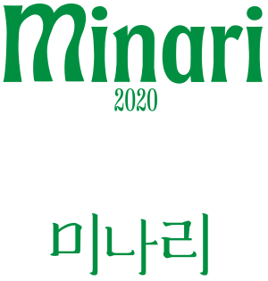
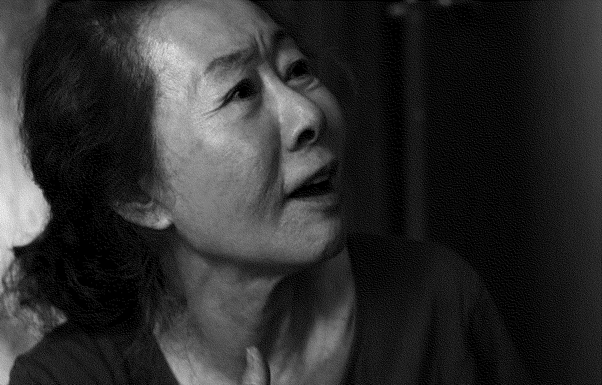
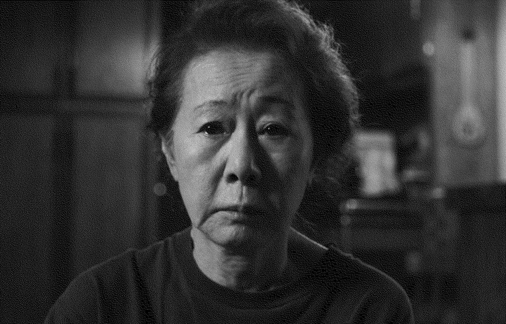

순자
범인
미나리
Minari
2020년
감독 정이삭
드라마
115분
순자 역
윤여정

순자의 첫 번째 대사
아휴, 네가 앤이구나? 아이고, 벌써 처녀가 다 됐네. 뭐야, 네 엄마 치마 뒤로 숨는 거야? 내가 그렇게 보고 싶었니? 아휴, 나도 네가 그렇게 보고 싶었지.
00:28:07


순자의 마지막 대사
미나리, 미나리, 원더풀, 원더풀, 미나리, 원더풀, 원더풀, 미나리, 미나리…. 미나리, 미나리, 원더풀, 원더풀, 미나리….
01:14:29